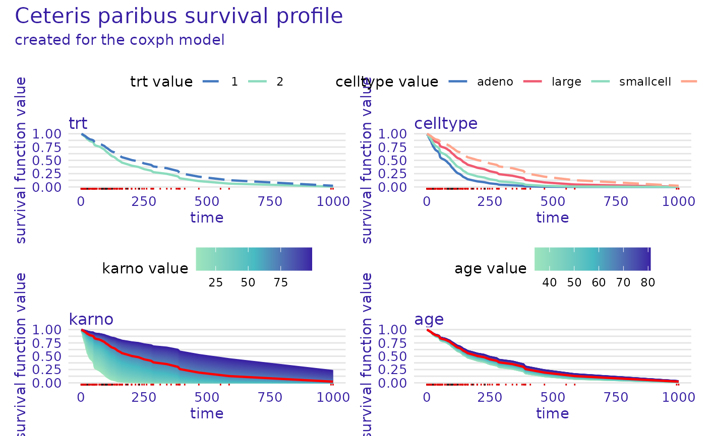
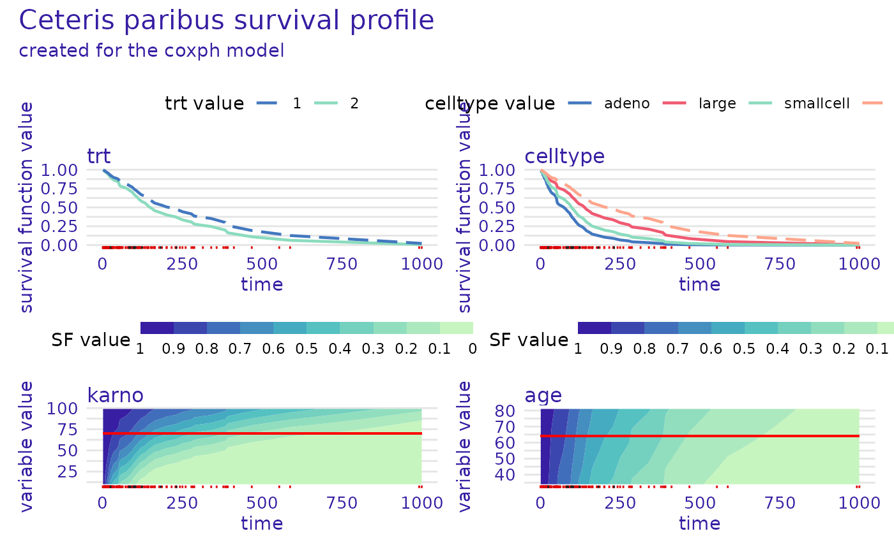

Instance Level Profile as Ceteris Paribus for Survival Models
Source:R/predict_profile.R
predict_profile.surv_explainer.RdThis function calculates Ceteris Paribus Proifles for a specific observation with the possibility to take the time dimension into account.
Usage
predict_profile(
explainer,
new_observation,
variables = NULL,
categorical_variables = NULL,
...,
type = "ceteris_paribus",
variable_splits_type = "uniform"
)
# S3 method for surv_explainer
predict_profile(
explainer,
new_observation,
variables = NULL,
categorical_variables = NULL,
...,
type = "ceteris_paribus",
output_type = "survival",
variable_splits_type = "uniform"
)Arguments
- explainer
an explainer object - model preprocessed by the
explain()function- new_observation
a new observation for which the prediction need to be explained
- variables
a character vector containing names of variables to be explained
- categorical_variables
a character vector of names of additional variables which should be treated as categorical (factors are automatically treated as categorical variables)
- ...
additional parameters passed to
DALEX::predict_profileifoutput_type =="risk"- type
character, only
"ceteris_paribus"is implemented- variable_splits_type
character, decides how variable grids should be calculated. Use
"quantiles"for percentiles or"uniform"(default) to get uniform grid of points.- output_type
either
"survival"or"risk"the type of survival model output that should be considered for explanations. If"survival"the explanations are based on the survival function. Otherwise the scalar risk predictions are used by theDALEX::predict_profilefunction.
Value
An object of class c("predict_profile_survival", "surv_ceteris_paribus"). It is a list with the final result in the result element.
Examples
# \donttest{
library(survival)
library(survex)
cph <- coxph(Surv(time, status) ~ ., data = veteran, model = TRUE, x = TRUE, y = TRUE)
rsf_src <- randomForestSRC::rfsrc(Surv(time, status) ~ ., data = veteran)
cph_exp <- explain(cph)
#> Preparation of a new explainer is initiated
#> -> model label : coxph ( default )
#> -> data : 137 rows 6 cols ( extracted from the model )
#> -> target variable : 137 values ( 128 events and 9 censored ) ( extracted from the model )
#> -> times : 94 unique time points , min = 1 , mean = 119.9706 , max = 845.56
#> -> times : ( generated from y with method quantiles )
#> -> predict function : predict.coxph with type = 'risk' will be used ( default )
#> -> predict survival function : predictSurvProb.coxph will be used ( default )
#> -> predict cumulative hazard function : -log(predict_survival_function) will be used ( default )
#> -> model_info : package survival , ver. 3.4.0 , task survival ( default )
#> A new explainer has been created!
rsf_src_exp <- explain(rsf_src)
#> Preparation of a new explainer is initiated
#> -> model label : rfsrc ( default )
#> -> data : 137 rows 6 cols ( extracted from the model )
#> -> target variable : 137 values ( 128 events and 9 censored ) ( extracted from the model )
#> -> times : 94 unique time points , min = 1 , mean = 119.9706 , max = 845.56
#> -> times : ( generated from y with method quantiles )
#> -> predict function : sum over the predict_cumulative_hazard_function will be used ( default )
#> -> predict survival function : stepfun based on predict.rfsrc()$survival will be used ( default )
#> -> predict cumulative hazard function : stepfun based on predict.rfsrc()$chf will be used ( default )
#> -> model_info : package randomForestSRC , ver. 3.1.1 , task survival ( default )
#> A new explainer has been created!
cph_predict_profile <- predict_profile(cph_exp, veteran[2, -c(3, 4)],
variables = c("trt", "celltype", "karno", "age"),
categorical_variables = "trt")
plot(cph_predict_profile, facet_ncol = 2)

rsf_predict_profile <- predict_profile(rsf_src_exp, veteran[5, -c(3, 4)], variables = "karno")
plot(cph_predict_profile, numerical_plot_type = "contours")

# }